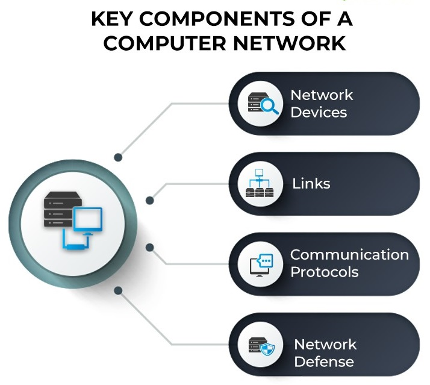

Overview
What is a computer network
A computer network is a system that connects two or more computing devices for transmitting and sharing information. Computing devices include everything from a mobile phone to a server.
These devices are connected using physical wires such as fiber optics, but can also be wireless. Networks may be classified by many criteria, including the transmission medium, bandwidth, communication protocols, network size, topology, traffic control mechanisms, and organizational intent.
Computer networks support many applications and services — access to the World Wide Web, digital video and audio, shared application and storage servers, printers and fax machines, and email and instant messaging.
Key components — 1
Network devices

Network devices, or nodes, are computing devices that need to be linked in the network. Some examples:
Computers, mobiles, and other consumer devices
End devices that users directly and frequently access.
Routers
Routing is the process of selecting the network path through which data packets travel.
Servers
Application or storage servers where the main computation and data storage occur — all requests for specific tasks or data come to the servers.
Switch
Repeaters are to networks what transformers are to electricity grids — devices that receive network signals and clean or strengthen them. Hubs are repeaters with multiple ports, passing data to whichever ports are available. Bridges only pass data to the destination port. A switch is a multi-port bridge.
Gateways
Hardware devices that act as gates between two distinct networks — these can be firewalls, routers, or servers.
Key components — 2
Links
Links are the transmission media, which can be of two types:
Wired
Examples include coaxial cables, phone lines, twisted-pair cabling, and optical fibers.
Wireless
Network connections can also be established through radio or other electromagnetic signals.
Key components — 3
Communication protocols
A communication protocol is a set of rules followed by all nodes involved in the information transfer. Common protocols include the internet protocol suite (TCP/IP), IEEE 802, Ethernet, wireless LAN, and cellular standards.
Network access layer
Defines how data is physically transferred — how hardware sends data bits through physical wires or fibers.
Internet layer
Responsible for packaging data into understandable packets and allowing it to be sent and received.
Transport layer
Enables devices to maintain a conversation by ensuring the connection is valid and stable.
Application layer
Defines how high-level applications can access the network to initiate data transfer.
Key components — 4
Network defense
While nodes, links, and protocols form the foundation of a network, a modern network cannot exist without its defenses. Security is critical when unprecedented amounts of data are generated, moved, and processed across networks.
Where it started
History
The first working network, called ARPANET, was created in the late 1960s and funded by the U.S. Department of Defense. Government researchers used it to share information at a time when computers were large and difficult to move.